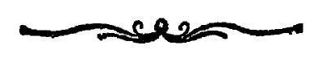
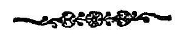

अथ
श्रीतन्त्रालोके ।

श्रीमन्महामाहेश्वराचार्याभिनवगुप्तविरचिते
श्रीजयरथकृतविवेकाख्यटीकोपेते

त्रयोविंशतितममाह्निकम् ।
आस्थाय भैरववपुर्निजाकृतेः संविभागेन ।
विदधातु वः स भद्रं सर्वत इह सर्वतोभद्रः ॥ १ ॥
इदानीं द्वितीयार्धेन अभिषेकविधिमभिधा-
तुमुपक्रमते
अथाभिषेकस्य विधिः
कथ्यते परमेश्वरः ॥ १ ॥
तमेवाह
यैषा पुत्रकदीक्षोक्ता
गुरुसाधकयोरपि ।
सैवाधिकारिणी भोग्य-
तत्त्वयुक्तिमती क्रमात् ॥ २ ॥